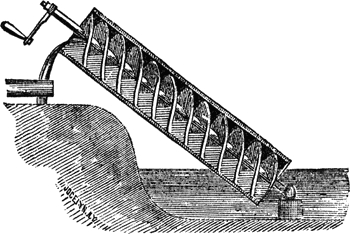
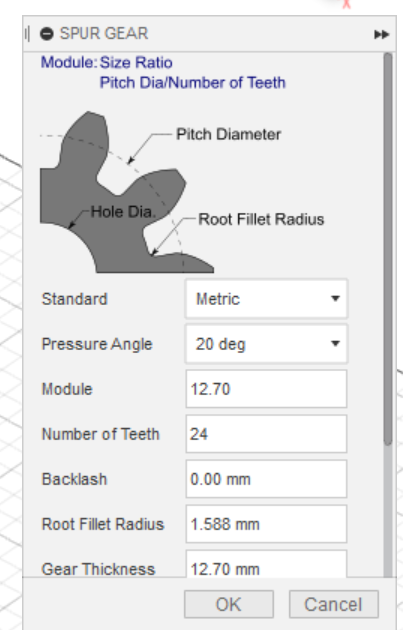
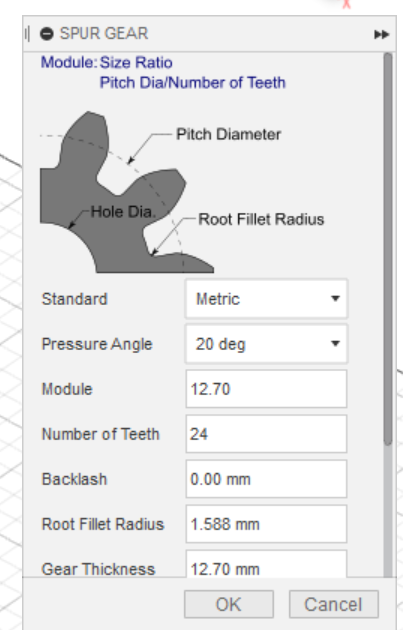
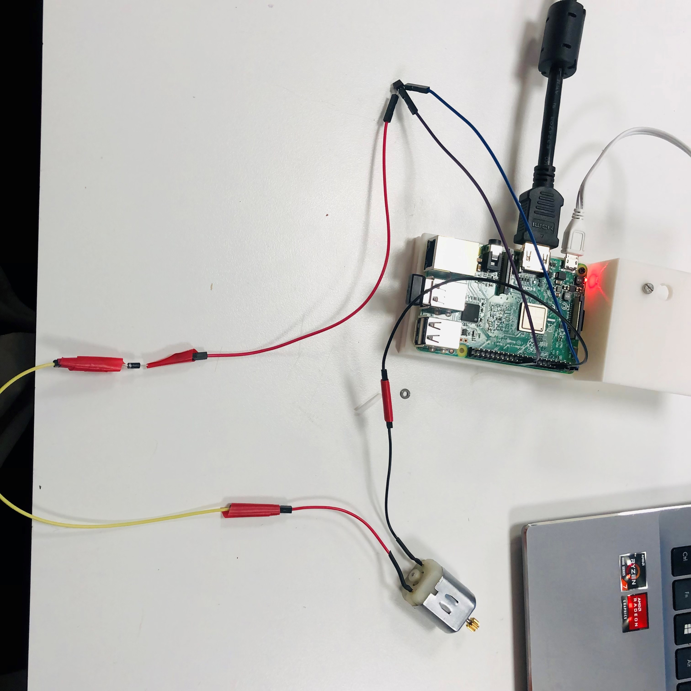
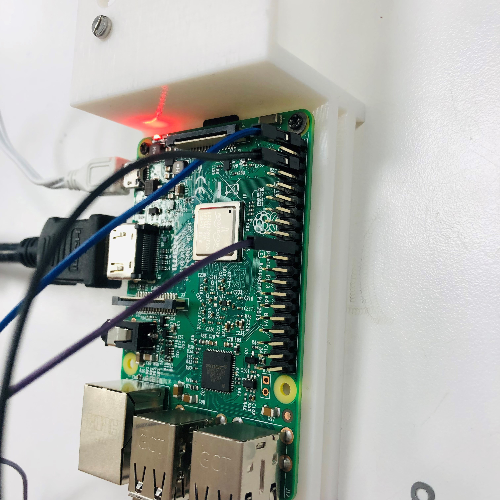
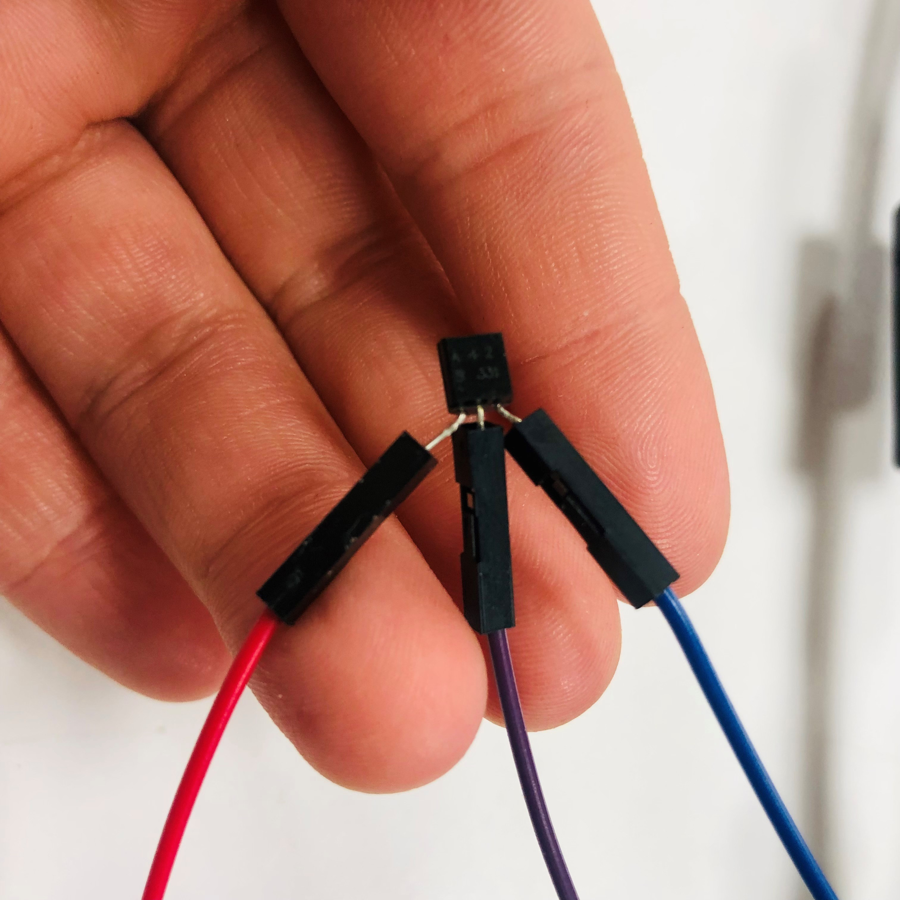
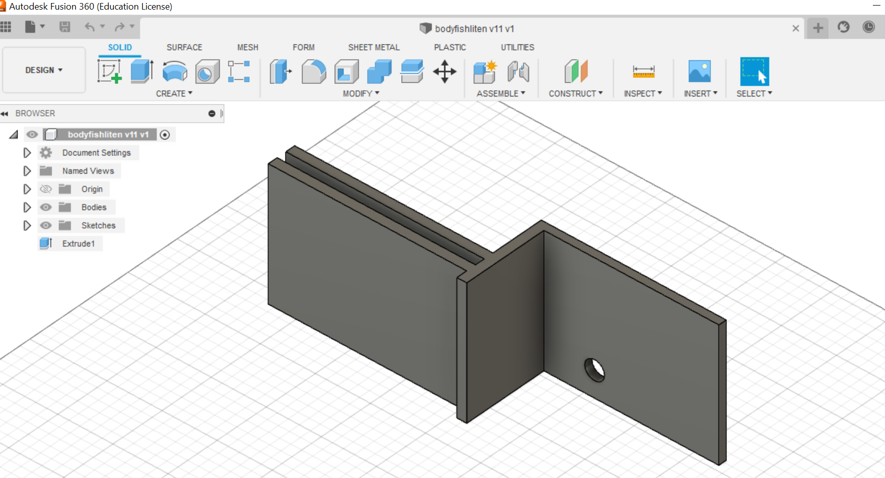
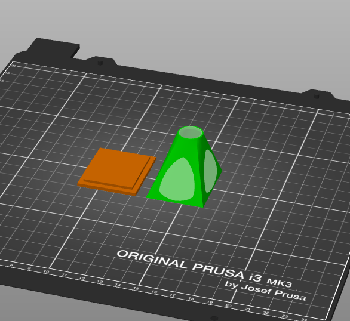
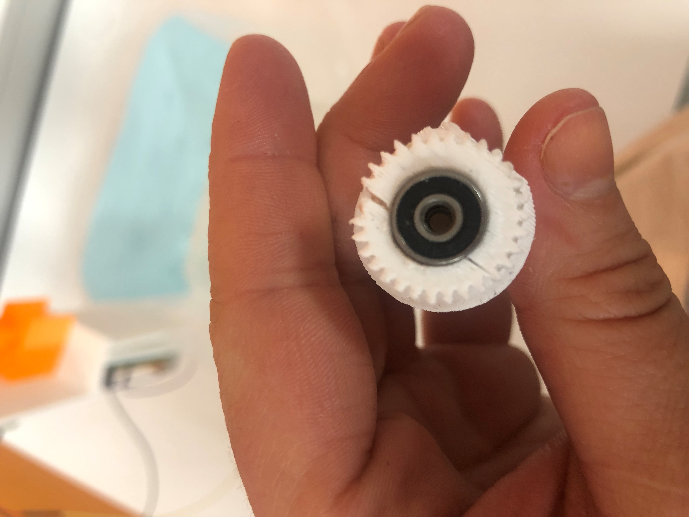

AUTOMATISK FISKEMAT MATER
LINK TIL GITHUB

Introduksjon om selve prosjektet
Til mitt digifab prosjekt har jeg valgt å lage en automatisk fiskemater. Dette prosjektet var inspirert av et annet prosjekt, men det meste er designet selv og deler er byttet ut slik at det ble en motor og ikke servo, og raspberry pi og ikke en Wemos D1 Mini. link til inspirasjonen: Ideen var at du skal kunne gi raspberry pi et tidspunkt inn i koden for å så at den da dytter mat ut til fiskene en gang om dagen til det gitte punktet. Selve ideen var å bruke en servo, men dette ble da byttet til en motor siden det ikke var noen 360grader servo på makerspace. Motoren snurrer og er festet til en skrue som heter "achrimedes screw" som da dytter maten ut i enden.
Archimedes Screw
Arkimedes skruen er en spiral på sylinder laget av matematikeren Arkimedes. som er laget for å transportere vann oppover. I dette prosjektet bruker vi den til å dytte mat bort over fra matlageret og ned til vannet.
I min modell har jeg først designet et tannhjul separat med den ferdige skruen. Skruen er også endret slik at det er plass til mutter inn i skruen som holder skruen fast. Nærbilde av skruen og hvor hjullageret skal sitte. Grunnen til jeg ikke ville designe skruen selv er at dette er en oppfinnelse allerede er oppfunnet og fungerer slik den skal. Tannhjulet som er satt på toppen av skruen er laget av Fusion 360 sin egen spur gear funksjon (bilde er kun for visning, ikke riktige dimensjoner)

 

Kode
Koden er laget ganske enkelt. Man skriver selv inn hvilket tidspunkt man vil at fiskene skal få mat. Etter det skal den selv kjøre og gi mat en gang om dagen. Dokumentasjon av hovedelementene: https://schedule.readthedocs.io/en/stable/ https://docs.python.org/3/library/time.html
Her kan man også se at jeg bruker GPIO som utgangspunkt slik at jeg kan koble en motor nesten direkte på raspberry pi uten å bruke et breadboard.

Oppkobling
Ved oppkobling har jeg prøvd å vært så simpel som mulig for å bruke minst mulig plass og ressurser. Oppkoblingen er en ermitter kabel som går fra motoren til kollektoren igjennom en diode som gjør at strømmen kun går en vei Svart går direkte til ground. Signal kabelen går igjennom transistoren (B331) i midten til GPIO24.
  3D printede deler
På 3D printede deler har jeg laget alle delene fra bunn bortsett fra skruen og pyramiden og toppen som maten ligger inne i. Alt er laget i Fusion 360 og alle delene bortsett fra skruen med tannhjulet er printet med en Prusa printer MK3 i PLA med 15% infill. Grunnen til de er laget fra bunn av er at jeg ville ha de like store som til raspberry pi og en motor. Det er også drillet hull i bodyen som raspberry pi og skruen ligger i da man trenger eget hull siden man har et ekstra tannhjul da for å gjøre motoren sterkere og tregere. Jeg trengte ekstra styrke for å få dyttet skruen rundt.
 HVORFOR DET IKKE FUNKER
Grunnen til dette prosjektet ikke fungerer er at skruen med tannhjulet knakk flere ganger. Og med ultimaker ble PLA taggene på tannhjulet ble for små og de knakk for lette sammen med nye tannhjulet. Det ble også prøvd å printe tannhjul separat for å lime på et nytt separat skrue også uten hell. Skulle jeg gjort igjen ville jeg hatt litt mer erfaring med tannhjul og hvordan disse funker, også hvordan størrelse på tannhjul spiller sammen med krefter.
